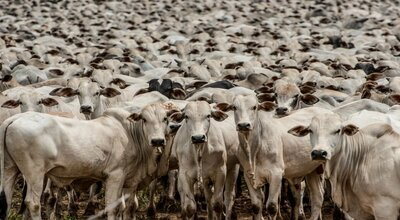
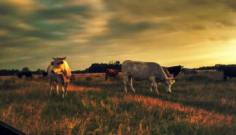

-
 Tecnologia revolucionária é revelada: Embrapa e ABHB lançam
solução inovadora para identificar touros de elite para
descendentes superiores
Tecnologia revolucionária é revelada: Embrapa e ABHB lançam
solução inovadora para identificar touros de elite para
descendentes superiores
-  Tecnologias para gado de corte estão em maior feira para agricultura familiar do Estado
-  O conjunto de tecnologias e práticas de manejo para gado de corte